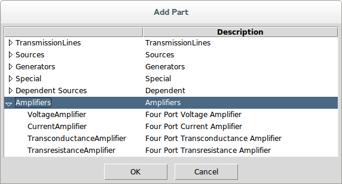
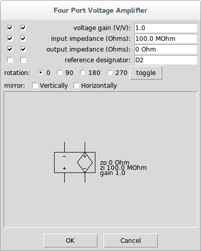
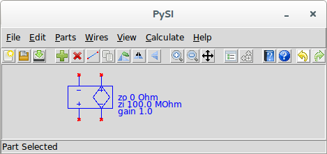

Add Part
| Dialog | Main Schematic Dialog↑ |
| Menu System | Parts↑ ▸ Add Part |
| Navigation | Alt+P,A |
| Key Binding | None |
| Toolbar | |
| Availability | Always |
This adds one of the Built-in Devices (Parts)↓ to the schematic.
The most useful and generic type of part for s-parameter files is the File↓ part.
When you add a part, you first see the part picker, which lists all of the part categories:

By selecting a part category, you find the parts listed in that category:

You select a part and press OK to bring up the part properties dialog:
In the part properties dialog, you see the part properties at the top, followed by the part orientation settings, followed by a picture of the part as it will be shown in the schematic.
The part properties are shown with two checkboxes, followed by a label, followed by the value. When first opened for a part, the default values are shown.
The first checkbox determines whether the property is to be shown in the schematic.
The second checkbox determines whether the keyword for the property is displayed (unchecking this box just shows the value).
The value is modified by clicking inside the white area where the property value is shown. Note that all property values that are numbers are shown in engineering notation (i.e. a number with a suffix indicating the exponent). PySIApp never uses scientific notation or anything like that. Also, if the number has units, the units are shown.
To change the value, you can either click once or double-click inside the value entry box. When you click once, the cursor is placed at the location clicked and you can edit the value that is already there. If you double-click, the entry is cleared and you can enter an entirely new value.
The units never need to be entered (but can be).
Numbers can be entered with exponents or with the engineering notation suffix. For example, 100 MOhm can be entered as 100 MOhm, 100 M, 100M, 100e6, or 10e7.
The reference designator is entered by PySIApp and is always unique at the time of entry. In that sense, it does not need to be modified or viewed in the schematic.
The orientation of a part can be altered through rotation and mirroring. The rotation shown is always for a rotation in the counter-clockwise direction, but usually one just presses the toggle button until it looks right. Mirroring vertically or horizontally is accomplished by checking the boxes.
You have no control over the exact placement of the text displayed with each part. It is placed justified properly depending on the orientation.
For many parts, there are alternate part pictures available. These are chosen by simply clicking inside the the part picture area of the dialog. For example, for the voltage amplifier shown, there is an alternate picture that has the voltage reference reversed at the input. Clicking in the part picture changes the picture to the following:

After you are satisfied with all of the part property settings and the orientation, press okay. The part properties dialog disappears and, when hovered over the canvas, you will see that your mouse cursor has now changed to a finger to indicate that the part can now be placed. left-clicking now has the part shown and selected:

Keeping the button pressed, the part remains selected and can be precisely placed.
Note that until a part is connected, you will see red x’s wherever the unconnected pins are on the device.
To change the part properties after the part has been placed, simply double-click on the part to bring up the part properties, or select the device and use the Edit Properties↓ command.
If at any time in the process of adding a part, you press the Cancel button (or <escape>), the part addition is aborted and you return to the schematic with no new part added.
Back to Parts↑. Back to Main Schematic Dialog↑.